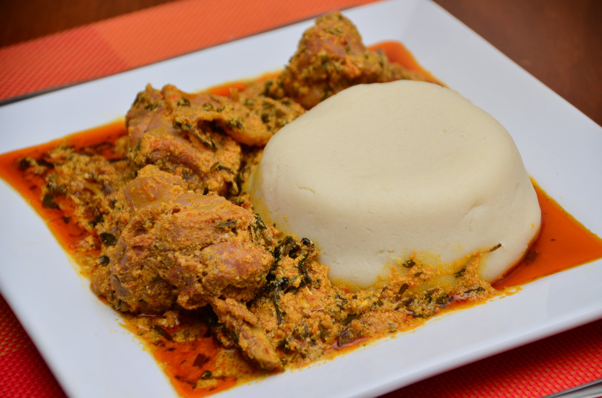

pounded yam and egusi

ingredients
- tuber yam
- 1 lbs boneless chicken cut in bit-size pieces
- 1 medium sliced onion
- 2 pieces maggi cubes
- 2 fresh chile peppers
- 2 cups melon seeds
- 340g ugwu
- 1/2 cup palm oil
- 1 cup vegetable oil
- dreied fish
- salt
- crayfish
- dried shrimp[optional]
preparation procedures
INSTRUCTIONS
Method 1 using mortar and pestle,
- peel the yam with a sharp knife. remove any spoiled spots or discoloration.
- chop into large chunks and immediately pour into water and wash dirt off.
- Pour yams in a medium pot under high heat with water- enough to cover the yams. add salt to taste if desied.
- Boil until tender for about 20 minutes. Remove from heat and immediately drain yams thoroughly in a colander
- Wash your mortar and pestle until clean. Add cooked yam to mortar and pound until smooth and stretchy.
- Add little water when necessary during pounding.
- Roll into balls and wrap in a plastic wrap or serve immediately in bowl with soup.
STEPS FOR MAKING EGUSI SOUP
- Put chicken pieces in a medium pot. Rinse the dried fish and add it to the pot.
- Add 1 onion, salt to taste and 2 maggi cubes.
- Add 1 1/2 cup water and bring to a boil on high heat for 25 minutes. Reduce heat and simmer for 30 min.
- Blend chile peppers and the remaining onion in a blender and puree. Pour onion pepper mixture into a bowl
and set aside.
- Put shrimp, crayfish and melon seed in a clean blender and pulse until a powder forms. Pour it in a bowl and
set aside.
- Squeeze the excess liquid from the spinach and set aside.
- Continue to cook until the chicken is tender. Stir in blended onion pepper mixture and cook 10 minutes.
Reduce heat to medium and add the melon seed mixture.
- Cook 20 minutes longer and add the spinach, oils and the 1 remaining maggi cube
Cover it and cook for another 5 minutes.